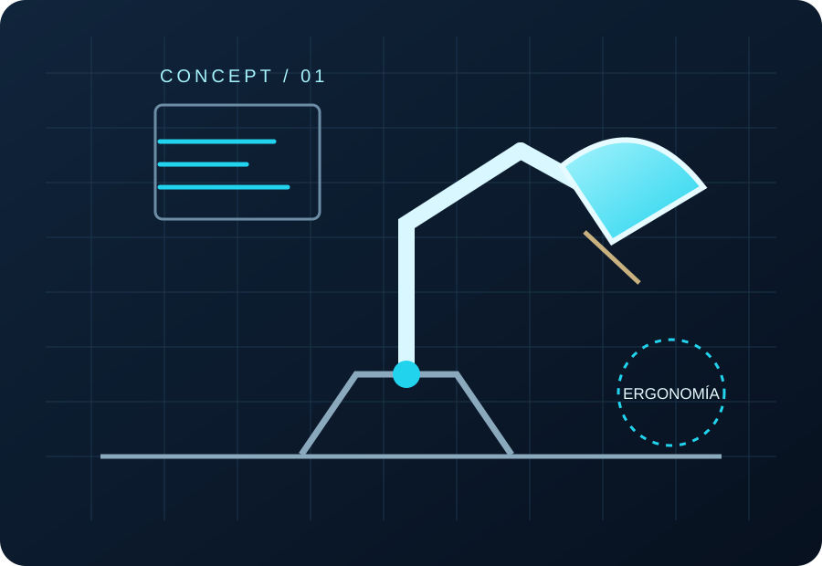

Imaginar soluciones
Observar problemas cotidianos y convertirlos en oportunidades de diseño.
UNA CARRERA PARA TRANSFORMAR IDEAS
Mi futuro empieza con una pregunta: ¿y si pudiera crear productos que mejoren la vida de las personas?
Quiero estudiar Ingeniería en Diseño Industrial y Desarrollo de Productos, una titulación que une creatividad, ciencia, tecnología y fabricación.

01 — LA MOTIVACIÓN
Esta carrera me interesa porque permite participar en todo el recorrido de un producto: detectar una necesidad, proponer una solución, diseñarla, comprobarla y prepararla para su fabricación.
Observar problemas cotidianos y convertirlos en oportunidades de diseño.
Aplicar matemáticas, física, materiales y representación técnica para que las ideas funcionen.
Diseñar productos útiles, comprensibles, seguros y más responsables con el entorno.
MI OBJETIVO
02 — EL RECORRIDO